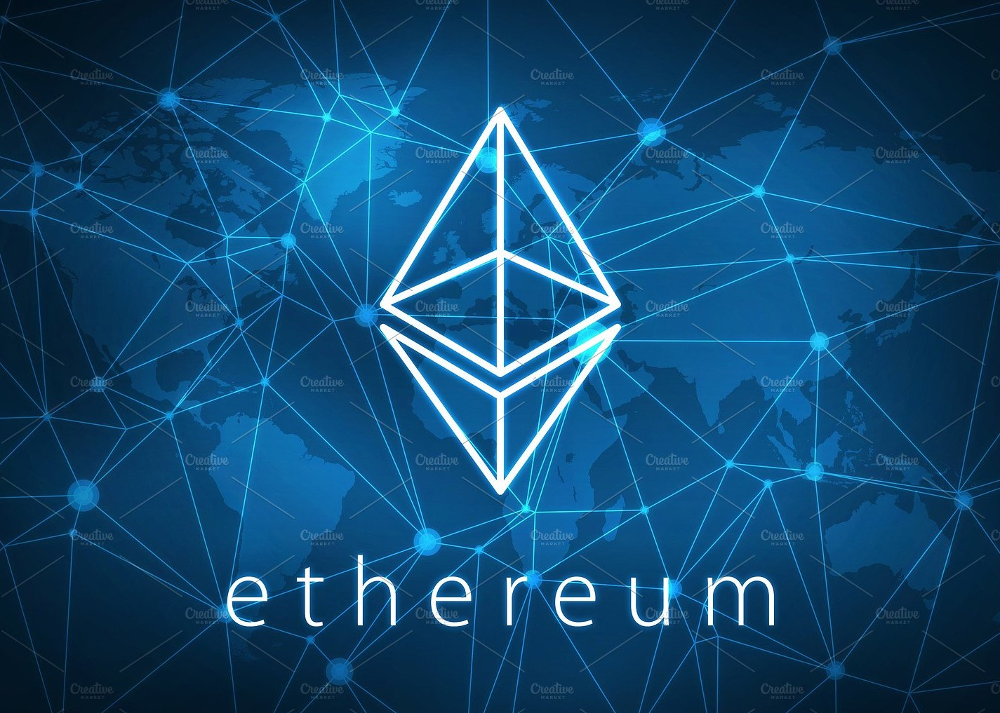
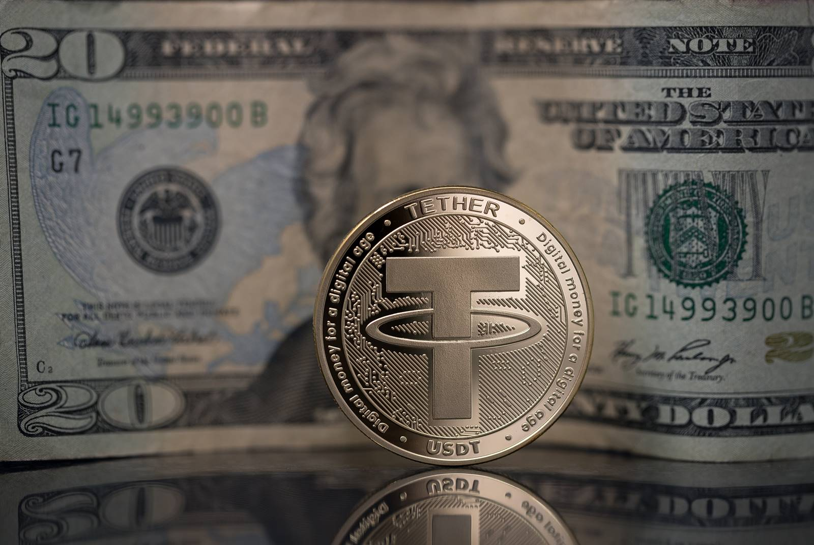
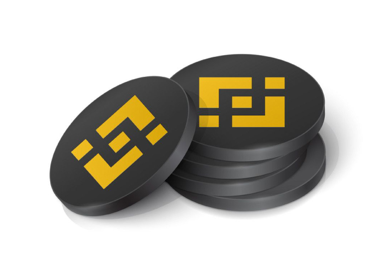

- 比特幣（BTC）
比特幣或BTC作為世界上第一個加密貨幣，於2008年推出。它也是第一個採用區塊鏈技術的貨幣。如今，比特幣已成為行業中價值最高的加密貨幣之一，甚至超過黃金。
- 以太坊（ETH）
以太坊的設計初衷是提供一種快速處理交易的方式，是基於比特幣區塊鏈技術開發而來的區塊鏈網路。該加密貨幣最早由Vitalik Buterin於2013年11月提出。

- Tether (USDT)
USDT與美金固定為1：1。 USDT (Tether) 是目前最受歡迎與美元掛鉤的加密貨幣。它原先是存在於比特幣區塊鏈上，後來進一步與以太坊和Tron的區塊鏈整合。 USDT已於數百個交易所上支援，並且在全球使用USDT的交易金額達到數十億美元。Tether指出 USDT的價值是以一對一比例的美金儲備支持。但是，USDT的價格可能會有浮動，2018年曾以多於10％的折扣價格交易。
Tether被認為是一個有效轉移資金的方式。即使在有資本管制的國家/地區，用戶也能夠買賣貨幣並用於國際交易。因此，龐大的國際支付市場令Tether的供應需求浮動的最大原因。

- Binance Coin (BNB)
BNB (幣安幣) 是驅動整個 BNB 鏈生態系的加密貨幣。做為世界上最受歡迎的功能型代幣之一，您不但能像任何其他加密貨幣一樣交易幣安幣，還可以在多種應用和用例中使用 BNB (幣安幣)。按一下這裡，來了解更多關於 BNB (幣安幣) 的資訊。
